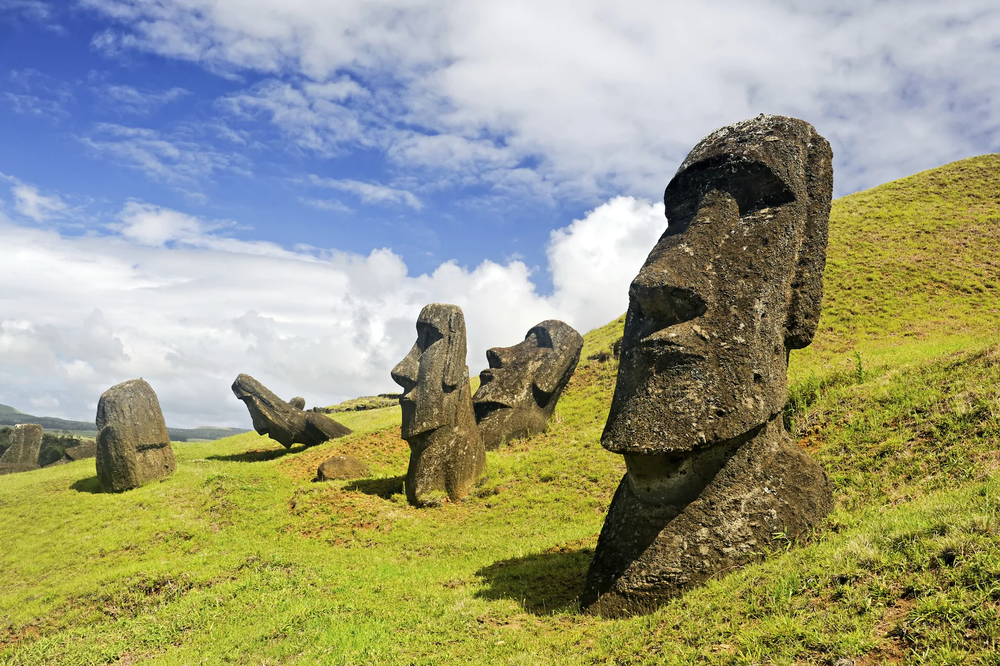
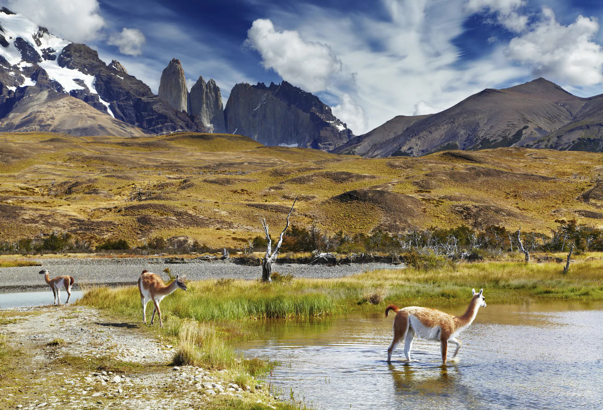
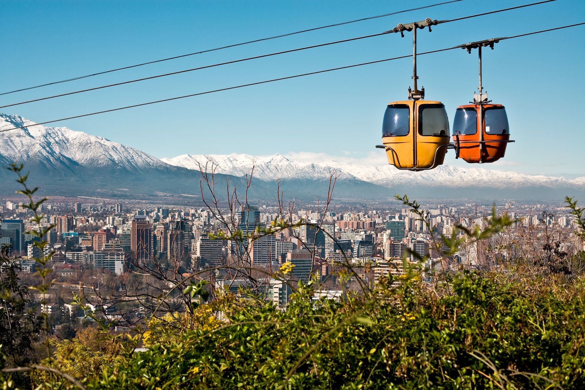

TurismoON: una página para tu paraíso
1-Isla de Pascua
El lugar que suele figurar en el primer puesto de la lista de lugares turísticos de Chile se halla a casi cinco horas de vuelo de la capital del país.
La misteriosa isla de Pascua se encuentra perdida en el Pacífico y sus míticos Moais la custodian día y noche. Cuando pisas su superficie, sientes una energía poderosa y parece que casi puedes ver a los rapanuis – como se conoce a los antiguos habitantes de Pascua – trabajar sus grandes deidades esculpidas en piedra.
Ya sea en bicicleta, a caballo, quad, bicicleta, coche alquilado o autobús, visita el volcán Rano Kau – en el extremo sur -, el pueblo de O Rongo, el volcán Terekava y los moais de Tongariki. Disfruta del atardecer en Tahai y sumérgete para disfrutar de los corales de su fondo marino. La visibilidad bajo el agua es espectacular, alcanzando los 60 metros, y te permite explorar las muchas cuevas submarinas existentes.
2-Parque Nacional Torres del Paine
Otro de los lugares de interés de Chile más célebres y bellos es el Parque Nacional Torres del Paine.
Realizando senderismo en él – siendo el circuito más famoso el de la W – podrás pasar por montañas de hasta 3.000 msnm, valles, ríos, lagos (como el Pehoé o el Sarmiento) y glaciares (como el Grey, el Tyndall y el Pingo). El paisaje te mantendrá constantemente boquiabierto y el premio final lo alcanzarás al culminar la ascensión que te lleva al mirador de las Torres.
Uno de los lugares más bellos de Sudamérica, en el que las llamas son dueñas y señoras.
3-Santiago de Chile
La capital de Chile es una ciudad que ofrece caras muy distintas.
De los cerros que rodean la ciudad, parten callejuelas estrechas que forman una maraña de barrios que esconden historias humanas. Todas ellas confluyen, finalmente, en el centro, donde el Palacio de La Moneda recuerda la historia reciente de Chile.
Tómate unas copas en la zona de Constitución y acaba en una de las muchas fiestas after que hay por la ciudad. La vida nocturna es una de las mejores bazas de Santiago de Chile.
Para conocer algo de la tradición antigua del país, sube al cerro de San Cristóbal y pasea por su mercadillo de artesanías de los domingos.
El lugar en el que sueles comenzar tus vacaciones en Chile tiene mucho que ofrecer.
Página creada por Sergio Delgado
Urbe 2020
Urbe 2020